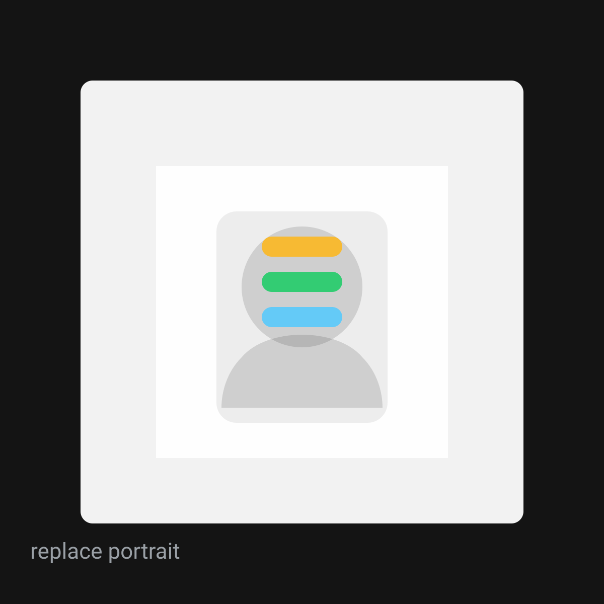

About
Kaique Oliveira é um lugar pra guardar e reencontrar: musica, cinema, texto. curadoria com foco em textura e memória. tudo pensado pra leitura rápida e navegação calma.

manifesto
esse site foi montado pra bater com os prints: fundo escuro, tipografia grande, cards com imagem dominante e chamadas laranjas pra ação. a ux aqui prioriza:
- tap targets grandes em mobile (sem link minúsculo)
- hierarquia clara: títulos grandes, metadados como “eyebrow”
- acessibilidade: skip link, foco visível, contraste e sem animação obrigatória
- seo: html semântico + json-ld + conteúdo renderizado no servidor (estático)
stack
html + css (grid/columns) + js vanilla. sem dependência externa e sem build.
turn into the original
quer receber a curadoria? manda um oi.
contato por emailtroca o e-mail acima pelo teu (seo: use mailto com domínio real).
faq rapido
substitui os svgs em assets/img pelos teus jpg/webp e atualiza os alt.
duplica um card em archive/index.html e ajusta data-tags e data-haystack.